무선설비기사 (2013-03-17 기출문제)
1과목: 디지털 전자회로
1. 전파 중간탭 정류기를 이용한 전파정류회로에서 맥동률에 대한 설명으로 옳지 않은 것은?
- 주파수에 비례한다.
- 부하저항에 반비례한다.
- 콘덴서 C의 정전용량에 반비례한다.
- 부하저항과 정전용량의 곱에 반비례한다.
(정답률: 72%)

2. 다음 회로에서 제너다이오드의 특성으로 옳은 것은? (단, Vs는 제너다이오드의 동작을 위한 정격전압보다 크다.)
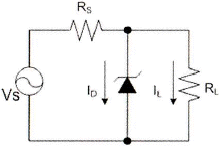
- 일정한 신호를 증폭시킨다.
- 사용하기 적당한 교류전압으로 변환한다.
- 리플 성분을 제거시킨다.
- 일정한 직류 출력전압을 제공한다.
(정답률: 72%)
3. 무부하시의 직류 출력 전압이 300[V]이고, 전부하시 직류 출력 전압이 250[V]였다면 전압 변동률은?
- 10[%]
- 20[%]
- 30[%]
- 40[%]
(정답률: 87%)
4. 다음 그림과 같은 회로의 입력에 계단 전압(step voltage)을 인가할 때 출력에는 어떤 파형의 전압이 나타나겠는가? (단, A는 이상적인 연산증폭기이다.)
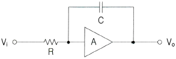
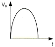
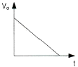
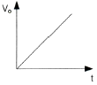
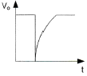
(정답률: 81%)
5. 아래의 괄호 안에 들어갈 알맞은 답을 앞에서부터 순서에 맞게 나열한 것은?
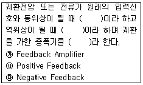
- ㉮ ㉯ ㉰
- ㉯ ㉰ ㉮
- ㉰ ㉮ ㉯
- ㉰ ㉯ ㉮
(정답률: 89%)
6. 다음 중 증폭기에 대한 설명으로 알맞은 것은?
- 교류(AC)를 직류(DC)로 바꾸는 여러 과정 가운데맥류를 완전한 직류로 바꾸어 준다.
- 입력의 신호변화가 출력단에 확대되어 나타난다.
- 교류성분을 직류성분으로 변환하기 위한 전기회로이다.
- 다이오드를 사용하여 교류 전압원의 (+) 또는 (-)의 반 사이클을 정류하고, 부하에 직류 전압을 흘리도록 한다.
(정답률: 86%)
7. 이상적인 A급 증폭기의 최대효율은?
- 18[%]
- 35[%]
- 50[%]
- 100[%]
(정답률: 82%)
8. 수정발진기는 임피던스가 어떤 조건일 때 가장 안정된 발진을 하는가?
- 저항성
- 용량성
- 유도성
- 유도성과 용량성 결합
(정답률: 75%)
9. 다음 그림은 수정진동자의 등가회로를 나타내었다. 수정진동자의 직렬공진주파수는?
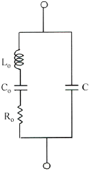
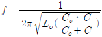
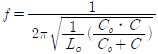
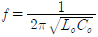
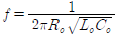
(정답률: 70%)
10. 간접 FM 변조방식(Armstrong 방식)에서의 필수 요소가 아닌 것은?
- 가산기(adder)
- 평형 변조기(balanced modulation)
- 위상천이기(90° phase shifter)
- 진폭제한기(limiter)
(정답률: 83%)
11. 일정시간 동안 200개의 비트가 전송되고, 전송된 비트 중 15개의 비트에 오류가 발생하면 비트 에러율(BER)은?
- 7.5[%]
- 15[%]
- 30[%]
- 40.5[%]
(정답률: 88%)
12. 다음 중 병렬 클리핑 회로에서 클리핑 특성을 좋게 하기 위하여 사용되는 저항 R의 조건으로 옳은 것은? (단, Rd는 다이오드의 순방향 저항이다.)
- R = Rd
- R = 1/Rd
- R ＜ Rd
- R ≫ Rd
(정답률: 82%)
13. 다음 중 슬라이서 회로에 대한 설명으로 옳은 것은?
- 입력전압이 어느 기준 레벨 이하일 때 출력을 증강시키는 회로
- 입력이 어느 레벨 이상이 될 때 깎아내어 레벨을 낮추는 회로
- 입력 파형을 일정 레벨로 고정시키는 회로
- 서로 반대 방향으로 바이어스된 클리퍼를 연속 연결한 회로
(정답률: 64%)
14. JK Flip-Flop에서 현재 상태의 출력 Qn을 1로 하고, J입력과 K입력이 1일 때 클럭펄스 CP에 신호가 인가되면 다음 상태의 출력 Qn+1은? (단, 플립플롭의 setup time과 holding time은 만족한다고 가정함)
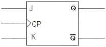
- 부정
- 1
- 0
- Qn
(정답률: 73%)
15. 그림과 같은 논리 회로는?
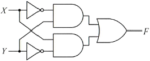
- XOR
- XNOR
- AND
- OR
(정답률: 87%)
16. 다음 중 틀린 것은?
- A+B = B+A
- AㆍB = BㆍA
- A+0 = 0
- Aㆍ1 = A
(정답률: 85%)
17. 다음의 진리표에 해당하는 논리회로도는?
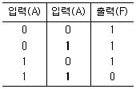
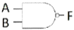
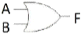
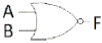
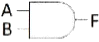
(정답률: 87%)
18. 다음 그림의 회로 명칭은?
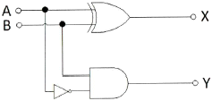
- 가산기
- 감산기
- 반감산기
- 비교기
(정답률: 83%)
19. 10진 BCD 코드를 LED 출력으로 표시하려면 어떤 디코더 드라이브가 필요한가?
- BCD-10세그먼트
- Octal-10세그먼트
- BCD-7세그먼트
- Octal-7세그먼트
(정답률: 89%)
20. 다음 중 특정 비트의 값을 무조건 0으로 바꾸는 연산은?
- XOR 연산
- 선택적-세트(selective-set) 연산
- 선택적-보수(selective-complement) 연산
- 마스크(mask) 연산
(정답률: 87%)
2과목: 무선통신 기기
21. FM 신호의 포락선에는 정보가 실어있지 않으므로 잡음으로 인한 포락선의 변화를 균일화 시킬 수 있는데 이러한 기능을 수행하는 것은 어느 것인가?
- 기저대역 필터
- 변별기
- 진폭제한기
- 반송파 필터
(정답률: 82%)
22. 5[kHz]의 신호주파수를 900[kHz]의 반송파로 진폭 변조한 경우 피변조파에 나타나는 주파수 성분이 아닌 것은?
- 900[kHz]
- 895[kHz]
- 9⑤[kHz]
- 890[kHz]
(정답률: 92%)
23. 아래 그림과 같이 FM 변조기를 이용하여 PM 변조를 하고자 한다. 괄호에 들어갈 내용으로 적합한 것을 고르시오.
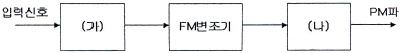
- (가) 없음 (나) 적분기
- (가) 적분기 (나) 없음
- (가) 없음 (나) 미분기
- (가) 미분기 (나) 없음
(정답률: 82%)
24. GPS에서 대역확산을 이용하는 것은 무엇을 달성하기 위한 것인가?
- 위성체로부터의 신호가 비공인 사용으로부터 보호될 수 없다는 것이다.
- 대역확산의 본질적인 처리이득이 사용되는 전력을 높은 수준으로 허용한다는 것이다.
- 각 위성체가 각 사용자 신호의 직교성에 의해 다른 신호와 간섭 없이 동일 주파수 대역을 사용할 수 있다는 것이다.
- 위성체 가격은 그 무게에 비례하기 때문에 가능한 요구전력을 증가시키는 것이 바람직하다.
(정답률: 89%)
25. 고조파의 방지 대책이 아닌 것은?
- 출력 증폭기로 push-pull 증폭기를 사용한다.
- 양극 동조 회로의 실효 Q를 높게 한다.
- 여진(bisa) 전압을 깊게 걸지 않는다.
- 고조파에 대해 밀결합한다.
(정답률: 83%)
26. OFDM은 어느 변조 방식의 일종이라고 볼 수 있는가?
- M-ary ASK (MASK)
- M-ary FSK (MFSK)
- M-ary PSK (MPSK)
- M-ary QAM (MQAM)
(정답률: 86%)
27. QAM 신호는 정보데이터에 의하여 반송파의 무엇을 변경하여 얻는 신호인가?
- 주파수
- 위상
- 진폭
- 위상과 진폭
(정답률: 94%)
28. 심볼간 간섭(Intersymbol Interference)이 수신기에서 문제가 되는 상황은?
- 심볼지연확산이 심볼시간과 같거나 이보다 긴 경우
- 심볼지연확산이 심볼시간보다 훨씬 짧은 시간인 경우
- 심볼지연확산이 0인 경우
- 심볼지연확산 시간을 알 수 없는 경우
(정답률: 83%)
29. 다음 중에서 수전설비에 해당하지 않는 것은?
- 비교기
- 유입개폐기
- 단로기
- 자동 전압 조정기
(정답률: 88%)
30. 전원회로에서 요구하는 일반적인 성능 요구조건으로 부적합한 것은?
- 충분한 전력용량을 가질 것
- 출력 임피던스가 높을 것
- 전압이 안정할 것
- 리플이나 잡음이 적을 것
(정답률: 93%)
31. 다음 중 정류회로의 특성에 관한 설명이 잘못된 것은?
- 전압변동률은 부하전류가 커지면 커질수록 증가하게 된다.
- 맥동률은 부하전류가 작아지면 작을수록 감소하게 된다.
- 파형률은 백분율로 하지 않으며, 부하전류가 증가하면 커진다.
- 정류효율의 값이 크면 교류가 직류로 변환되는 과정에서 손실이 적게 된다.
(정답률: 83%)
32. 브리지형 정류회로에서 직류 출력전압이 10[V]이고, 부하가 10[Ω]이라고 하면 각 정류소자에 흐르는 첨두 전류값은?
- π/2[A]
- π[A]
- 2π[A]
- 4π[A]
(정답률: 79%)
33. 전압 변동 요인으로 보기 어려운 것은?
- 오랜 사용 시간
- 부하 변동
- 교류 입력전압 변동
- 온도에 따른 소자 특성 변화
(정답률: 89%)
34. 다음 전원회로의 설명에서 잘못된 것은?
- 단상 전파 정류회로의 최대 역전압은 2Vm이다.
- 단상 전파 정류회로의 맥동 주파수는 전원주파수 f이다.
- 단상 전파 정류회로의 맥동율은 48.2[%]이다.
- 단상 전파 정류회로의 정류 효율은 81.2[%]이다.
(정답률: 79%)
35. 쵸크 입력형 평활회로와 비교하여 콘덴서 입력형 평활회로에 대한 다음 설명 중 틀린 것은?
- 맥동율이 적다.
- 전압 변동율이 크다.
- 직류 출력전압이 크다.
- 정류소자의 이용률이 높다.
(정답률: 58%)
36. 다음 중 수신기의 전기적 성능을 나타내는 지표로서 가장 적합한 것은?
- 변조도, 왜율, 안정도
- 감도, 선택도, 충실도
- 감도, 변조도, 점유주파수대폭
- 변조도, 왜율, 점유주파수대폭
(정답률: 87%)
37. 다음 중 AM 송신기의 전력 측정방법에 속하지 않는 것은?
- 수부하법
- 전구의 조도 비교법
- 의사 공중선법
- 열량계법
(정답률: 82%)
38. 급전선상에 반사파가 없을 때 전압 정재파비는 얼마가 되는가?
- 0
- 1/2
- 1
- ∞
(정답률: 85%)
39. 단상 전파 정류회로의 직류 출력전압과 직류 출력전력은 단상 반파 정류회로와 비교하여 각각 몇 배인가?
- 1배, 2배
- 1배, 4배
- 2배, 2배
- 2배, 4배
(정답률: 89%)
40. 전압 변동률을 d, 부하시 직류 출력전압을 Vn, 무부하시 직류 출력전압을 Vo라 할 때 Vo를 바르게 구한 것은?
- Vn(1+d)
- Vn(1-d)
- Vn/(1+d)
- Vn/(1-d)
(정답률: 82%)
3과목: 안테나 공학
41. 레이더의 공중선에서 송신된 펄스가 6[μs]후에 목표물로부터 반사되어 수신되었다면 목표물까지의 거리[m]는?
- 450
- 900
- 1800
- 3600
(정답률: 79%)
42. 다음 중 전파의 성질에 관한 설명으로 적합하지 않은 것은?
- 전파는 횡파이다.
- 균일한 매질 중에 전파하는 전파는 직진한다.
- 반사와 굴절 작용이 있다.
- 주파수가 높을수록 회절 작용이 심하다.
(정답률: 88%)
43. 변화하고 있는 자계는 전계를 발생시키고 또 반대로 변화하고 있는 전계는 자계를 발생시키는 사실을 나타내고 있는 것은?
- Maxwell 방정식
- Lentz 방정식
- Poynting 정리
- Laplace 방정식
(정답률: 95%)
44. Balun에 대한 설명으로 옳지 않은 것은?
- λ/2 다이폴을 동축 급전선으로 급전할 때 사용하면 좋다.
- 안테나와 급전선의 전자계 모드가 다른 경우에 사용한다.
- 집중 정수형과 분포 정수형이 있다.
- λ/2 다이폴을 평행 2선식으로 급전할 때 필요하다.
(정답률: 71%)
45. 다음 중 정재파를 설명하는데 옳지 못한 것은?
- 한쪽 방향으로만 진행하는 파이다.
- 정합이 되어있지 않았을 때 생긴다.
- 정재파가 클수록 전송손실이 크다.
- 전류 전압의 위상은 선로상 어느 점에서도 동일하다.
(정답률: 82%)
46. 다음 중 λ/2 다이폴과 동축케이블 사이의 정합회로에 사용되는 것은?
- Trap 회로
- T형 정합
- Gamma 정합
- Y형 정합
(정답률: 70%)
47. 가장 이상적인 VSWR(정재파비)의 값은 얼마인가?
- 0
- ∞
- 1
- 10
(정답률: 88%)
48. 마이크로파의 전송선로로서 도파관을 사용하는 이유로 가장 적절한 것은?
- 취급전력이 작고 방사손실이 없다.
- 유전체 손실이 적다.
- 부하와의 정합상태가 불량하여도 정재파가 발생하지 않는다.
- 외부 전자계와 완전하게 격리가 불가능하다.
(정답률: 85%)
49. 공진에서의 고유주파수란 무엇인가?
- 안테나 여진시 안테나의 공진주파수 중에서 가장 낮은 주파수
- 안테나 여진시 안테나의 공진주파수 중에서 가장 높은 주파수
- 안테나 여진시 안테나의 공진주파수 중에서 1/2보다 낮은 주파수
- 안테나 여진시 안테나의 공진주파수 중에서 1/2보다 높은 주파수
(정답률: 70%)
50. 안테나 지향성을 높이는 방법이 아닌 것은?
- 도파기 사용
- 반사기 사용
- 반파장 다이폴을 평면상에 배열한다.
- 연장선륜은 고유주파수보다 높은 주파수로 공진시킨다.
(정답률: 71%)
51. 사용주파수가 20[MHz]이고, 복사저항이 73.13[Ω]인 반파장 다이폴 안테나의 실효길이는 약 얼마인가?
- 2.4[m]
- 3.6[m]
- 4.8[m]
- 5.2[m]
(정답률: 65%)
52. 단파대에서 주로 사용되는 안테나는?
- 롬빅 안테나
- T형 안테나
- 우산형 안테나
- 역L형 안테나
(정답률: 85%)
53. 다음 중 접지 안테나의 손실저항에 해당되지 않는 것은?
- 와전류저항
- 코로나 누설저항
- 유전체손실
- 표피저항
(정답률: 81%)
54. 페이딩 현상과 관련된 설명 중 틀린 것은?
- 두 개 이상의 전파가 서로 간섭을 일으켜 진폭 및 위상이 불규칙해지는 현상이다.
- 다중 경로 페이딩에 대한 대책으로 다이버시티가 활용된다.
- 직접파보다 간섭파가 우세할 경우 Rayleigh 페이딩으로 모델링한다.
- 다중 경로 페이딩 환경에서는 레이크 수신기는 적절하지 않다.
(정답률: 77%)
55. 초단파 및 극초단파가 가시거리 이상까지 전파하는 원인에 해당되지 않는 것은?
- 산악회절 현상에 의한 원거리 전파
- 전리층 투과에 의한 원거리 전파
- 라디오 덕트에 의한 원거리 전파
- 스포라딕 E층에 의한 원거리 전파
(정답률: 74%)
56. 페이딩을 방지하기 위해 둘 이상의 수신 안테나를 서로 다른 장소에 설치하여 두 수신 안테나의 출력을 합성하거나 양호한 출력을 선택하여 수신하는 방법이 사용되는 페이딩은?
- 간섭성 페이딩
- 편파성 페이딩
- 흡수성 페이딩
- 선택성 페이딩
(정답률: 83%)
57. 무선 수신기의 잡음 개선방법으로 틀린 것은?
- 수신 전력의 감소
- 내부 잡음전력의 억제
- 수신기의 실효 대역폭의 축소
- 통신방식의 적당한 선택
(정답률: 81%)
58. 대기 굴절률에 대한 설명 중 틀린 것은?
- 대기의 온도, 기압 및 습도에 따라 굴절률이 달라진다.
- 일반적으로 높이 올라갈수록 대기의 굴절률이 작아진다.
- 전자파의 전파 속도는 상층부에 비해 대지면에 가까워질수록 빨라진다.
- 대기의 굴절률은 대기의 유전율에 비례한다.
(정답률: 60%)
59. 대류권파의 페이딩 생성원인에 의한 분류에 속하는 것으로 옳은 것은?
- 신틸레이션 페이딩
- 동기성 페이딩
- 선택성 페이딩
- 근거리 페이딩
(정답률: 84%)
60. 모든 스펙트럼 영역에 균일하게 퍼져있는 연속성 잡음은?
- 인공잡음
- 대기잡음
- 백색잡음
- 우주잡음
(정답률: 92%)
4과목: 무선통신 시스템
61. 다음 설명은 어떤 다이버시티에 대해 설명하고 있는가?
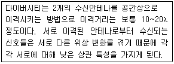
- 사이트 다이버시티 기법(Site Diversity)
- 공간 다이버시티 기법(Space Diversity)
- 시간 다이버시티 기법(Time Diversity)
- 편파 다이버시티 기법(Polarization Diversity)
(정답률: 89%)
62. 다음의 대역확산 방식 중 PN코드에 의해 확산이 용이하여 변복조 과정이 다른 방식에 비해 우수하며 페이딩에 의한 수신신호의 판별력이 좋은 것은?
- 직접 도약(DS)
- 주파수 도약(FH)
- 시간 도약(TH)
- 간접 도약(IS)
(정답률: 79%)
63. AM 송신기에서 부궤환 방식을 채용하여 얻어지는 특성이 아닌 것은?
- 이득향상
- 잡음감소
- 주파수특성 개선
- 발진주파수 개선
(정답률: 57%)
64. OFDM(Orthogonal Frequency Division Multiplexing) 방식의 장점에 해당하지 않는 것은?
- 혼신에 대해 강하다.
- 낮은 속도의 다중 채널에 정보를 전송할 수 있다.
- 송ㆍ수신단간 반송파 주파수의 옵셋이 존재할 경우에도 신호대 잡음비가 크게 감소하지 않는다.
- 스펙트럼 대역의 사용효율을 최대한 높일 수 있다.
(정답률: 71%)
65. CDMA 시스템에서 발생하는 근거리/원거리 문제(Near-far problem)에 대한 설명으로 옳은 것은?
- 페이딩 현상이 주 원인이다.
- 단말기의 송신전력 제어로 해결할 수 있다.
- 도플러 효과에 의해 발생한다.
- 확산이득을 증가시키면 근거리/원거리 문제는 경감된다.
(정답률: 59%)
66. 다음 중 RFID에서 자체에 전원은 없지만 피에조 전기(Piezo Electric) 효과를 이용하여 태그를 동작시키는 것을 무엇인가?
- Close Coupling
- Inductive Coupling
- Load Modulation
- Surface Acoustic Wave
(정답률: 68%)
67. 다음 근거리 무선기술 중 최대전송속도를 제공해 줄 수 있는 것은?
- ZigBee
- W-LAN
- BlueTooth
- UWB
(정답률: 80%)
68. 다음 중 하드 핸드오프의 종류가 아닌 것은?
- 교환기간 하드 핸드오프
- 프레인 offset 간 핸드오프
- Dummy 파이롯 핸드오프
- Softer 핸드오프
(정답률: 88%)
69. RFID 기술의 기본구성이 아닌 것은?
- Tag
- Reader
- Antenna
- Sensor
(정답률: 70%)
70. 다음 기술 중 2.4[GHz] 대역폭을 사용하며, 50[m] 거리 내에 있는 최대 127개까지의 기기간을 연결하는 홈 RF 네트워크 기술은?
- IEEE 1394
- IEEE 802.3
- Bluetooth
- SWAP
(정답률: 69%)
71. 이동통신 시스템에서 무선 교환국의 기능으로 볼 수 없는 것은?
- 통화 절체(Hand-off) 기능
- 과금과 관련된 정보 저장 기능
- 위치 검출 및 등록 기능
- 발착신 신호 송출 기능
(정답률: 60%)
72. 다음 중 무선 랜의 전송방식에 해당하지 않는 것은?
- 적외선 방식
- 확산 스펙트럼 방식
- 초 광대역 무선통신 방식
- 협대역 마이크로웨이브 방식
(정답률: 66%)
73. 다음 중 인접 계층간 통신을 위한 인터페이스는?
- SAP(Service Access Point)
- PDU(Protocol Data Unit)
- SDU(Service Data Unit)
- PCI(Programmable Communication Interface)
(정답률: 84%)
74. OSI 참조모델에서 전송제어, 흐름제어, 오류제어 등의 역할을 수행하는 계층은?
- 세션 계층
- 네트워크 계층
- 물리 계층
- 데이터링크 계층
(정답률: 86%)
75. 다음 중 FEC(Forward Error Correction)에 대한 설명이 잘못된 것은?
- 데이터 비트 프레임에 잉여 비트를 추가해 에러를 검출, 수정하는 방식이다.
- 연속적인 데이터 흐름 외에 역채널이 필요하다.
- 에러율이 낮은 경우 효과적이다.
- 잉여 비트를 첨가하므로 전송 효율이 떨어진다.
(정답률: 83%)
76. 데이터 전송률을 54[Mbps]까지 올리는 802.11a 무선랜의 물리계층에서 사용하는 전송방식은?
- DSSS
- FHSS
- OFDM
- Infra-Red
(정답률: 76%)
77. 마이크로파 중계국소의 올바른 설치 계획에 해당되지 않는 것은?
- 산정상에 설치
- 원격감시제어장비 구비
- 비가시권 확보
- 정전압장치구비
(정답률: 78%)
78. 전기 전자장비로부터 불요전자파가 최소화 되도록 함과 동시에 어느 정도의 외부 불요전자파에 대해서는 정상동작을 유지할 수 있는 능력을 갖고 있는지 설명하는 용어는?
- EMI
- EMP
- EMC
- EMS
(정답률: 79%)
79. 무선통신망을 구축함으로서 얻어지는 장점이 아닌 것은?
- 사회 경제 문화 등의 발전 기여
- 통신비용의 절감 효과
- 통신의 고신뢰성 실현
- 다양한 통신서비스의 공유
(정답률: 68%)
80. 백색 가우시안 잡음의 특징으로 틀린 것은?
- 전대역에 걸쳐 전력 스펙트럼 밀도가 일정한 크기를 가진다.
- 백색가우시안 잡음은 신호에 더해지는 형태다
- 열잡음(thermal noise)이 대표적인 백색 가우시안 잡음이다.
- 레일리 분포 특성을 보인다.
(정답률: 86%)
5과목: 전자계산기 일반 및 무선설비기준
81. 운영체제에서 컴퓨터 시스템 내의 물리적인 CPU, 메모리, 입출력 장치 등과 논리적 자원인 파일들이 효율적으로 고유의 기능을 수행하도록 관리하고 제어하는 부분은 다음 중 무엇인가?
- 메모리
- GUI
- 커널
- I/O
(정답률: 75%)
82. 다음 괄호 안에 들어갈 알맞은 것은?
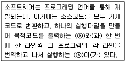
- ⓐ 컴파일러 ⓑ 인터프리터
- ⓐ인터프리터 ⓑ 컴파일러
- ⓐ어셈블리어 ⓑ 컴파일러
- ⓐ인터프리터 ⓑ 어셈블리어
(정답률: 82%)
83. 다음 중 그레이 코드 10110110을 2진수로 변환한 것으로 맞는 것은?
- 11011011
- 10101101
- 01001100
- 01101011
(정답률: 78%)
84. 마이크로컴퓨터의 기본 정보 ‘0’과 ‘1’로만 표현되며, 이러한 부호의 조합을 명령(instruction)이라고 한다. 그리고 명령들은 어떤 목적과 규칙에 따라 나열되고, 메모리에 저장되는데 이것을 무엇이라 하는가?
- 데이터(DATA)
- 소프트웨어(Software)
- 신호(Signal)
- 2진 코드
(정답률: 69%)
85. 다음 중 자바(java) 언어의 특징으로 옳지 않은 것은?
- 객체지향언어의 장점을 가지고 있다.
- 컴파일러 언어이다.
- 분산환경에 알맞은 네트워크 언어이다.
- 플랫폼에 무관한 이식이 가능한 언어이다.
(정답률: 72%)
86. 주소지정방식 중 명령어 내에 오퍼랜드 필드의 내용이 데이터의 유효주소가 되는 주소지정방식은?
- 직접 주소지정방식
- 간접 주소지정방식
- 레지스터 주소지정방식
- 레지스터 간접 주소지정방식
(정답률: 65%)
87. 깊이(depth)가 4인 전 이진트리(full binary tree)를 배열로 표현하고자 한다. 배열의 시작 색인(index)이 0으로 시작된다면 마지막 색인의 값은 얼마인가?
- 13
- 14
- 15
- 16
(정답률: 65%)
88. 프로그램에서 함수들을 호출하였을 때 복귀주소(return address)들을 보관하는데 사용하는 자료구조는 어느 것인가?
- 스택(stack)
- 큐(queue)
- 트리(tree)
- 그래프(graph)
(정답률: 81%)
89. 순차탐색(sequential search)에서 n개의 자료에 대해 평균 키 비교 횟수는 얼마인가?
- n/2
- n
- (n+1)/2
- n+1
(정답률: 84%)
90. CPU가 어떤 프로그램을 순차적으로 수행하는 도중에 외부로부터 인터럽트 요구가 들어오면, 원래의 프로그램을 중단하고, 인터럽트를 위한 프로그램을 먼저 수행하게 되는데 이와 같은 프로그램을 무엇이라 하는가?
- 명령 실행 사이클
- 인터럽트 서비스 루틴
- 인터럽트 사이클
- 인터럽트 플래그
(정답률: 87%)
91. “무선통신의 송신을 위한 고주파 에너지를 발생하는 장치와 이에 부가되는 장치”는 무엇을 설명한 내용인가?
- 송신장치
- 송신설비
- 송신공중선계
- 무선통신
(정답률: 69%)
92. 지상파디지털 텔레비전방송용 무선설비의 변조방식은?
- 8-VSB 방식
- QPSK 방식
- QPSK 및 BPSK
- BPSK
(정답률: 86%)
93. 전파를 이용하여 모든 종류의 기호ㆍ신호ㆍ문언ㆍ영상ㆍ음향 등의 정보를 보내거나 받는 것을 무엇이라 하는가?
- 유무선통신
- 무선설비
- 무선통신
- 유선통신
(정답률: 84%)
94. 주파수 할당을 받은 자가 주파수 이용기간이 만료되어 주파수를 재할당 받고자 하는 경우에 주파수 이용기간 만료 몇 개월 전에 신청하여야 하는가?
- 12개월 전
- 6개월 전
- 4개월 전
- 3개월 전
(정답률: 85%)
95. 무선국은 허가증에 기재된 사항의 범위 내에서 운용하여야 한다. 다음 중 예외적으로 허용되는 통신이 아닌 것은?
- 조난통신
- 긴급통신
- 안전통신
- 제3자에 의한 통신
(정답률: 85%)
96. 다음 중 평균전력을 나타내는 기호는?
- PX
- PY
- PZ
- PR
(정답률: 86%)
97. "공중선 전력에 주어진 방향에서의 반파다이폴의 상대이득을 곱한 것“으로 정의되는 것은?
- 규격전력
- 실효복사전력
- 첨두포락선전력
- 등가등방복사전력
(정답률: 68%)
98. 전파형식의 표시에 있어서 등급을 표시하는 셋째기호 중 텔레비전(영상)을 나타내는 기호는?
- N
- E
- W
- F
(정답률: 70%)
99. 무선종사자 시험 종료 후 한국방송통신전파진흥원은 며칠 이내에 합격자 명단을 게시하거나 합격자에게 개별 통지해야 하는가?
- 7일
- 10일
- 15일
- 30일
(정답률: 67%)
100. 전파를 직접 공중 발사하지 않고 열에너지 등으로 변환하는 장치로서 송신기의 조정, 시험 등에 사용되는 것은?
- 기준공중선
- 의사공중선
- 대수주기공중선
- 수직편파공중선
(정답률: 76%)